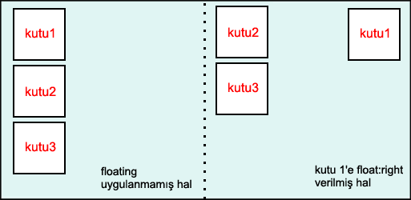

CSS ile sayfa planlamak için kullanılan yöntemlerden bir tanesidir float ve clear özelliklerinin kullanımı. Float bir elementi Normal Akışın dışına çıkarmak için kullanılan bir yöntemdir. Bir biri ardına sıralanmış elementlere float uygulandığında elementler eğer yeterli alan varsa yan yana dizilirler. Float Dinamik Göreceli Konumlandırma gibidir ve bu amaçla kullanılabilir.
Clear özelliği ile float uygulanmış element'den sonraki elementlere float etkisini durdurmamız mümkündür. Örneğin iki paragrafınız olsun ve bunlardan sadece ilkini float uygulanmış elementin yanına koymak istiyorsunuz, bu durumda ikinci paragrafa clear özelliği atadığınızda bu element float uygulanmış elementin altında konumlanacaktır.
float
Yapısı : float: \<deger> Aldığı Değerler :left | right | none | inherit Başlangıç değeri: none Uygulanabilen elementler: tüm elementler Kalıtsallık: Yok
Float ilk olarak resimleri konumlandırmak için kullanılmıştır. Resimlerin metinlere göre konumunu belirlemek için HTML 1.0 ile birlikte align özelliği kullanıldı. Böylelikle resimler metinlere göre sola veya sağa konumlandırması imkanı sağlanmış oldu. Bu kullanım float ile benzerdir. Resimleri konumlandırmak için kullanılan bu yöntem daha sonra CSS'in olaya el atması ile tüm elementler için kullanıla geldi. Ayrıca float özelliği çoklu kolon oluşturmak için de kullanılır.
[sourcecode language='css'] img { float:left; margin:0 4px 4px 0; } [/sourcecode]
float:left ataması yapılan resim sola dayanacak ve metin bu resmin etrafını saracaktır.
[sourcecode language='html'] 
... paragraf metni ...
[/sourcecode]
Bir elemente float uygulandığında, float uygulanan kutu kapsayıcı kutunun veya diğer float kutusunun dış kenarının sağına veya soluna kaydırılabilir. Float uygulanan kutu, dökümanın normal akışının dışına çıkacaktır. Dökümandaki normal kutular float elementi burda yokmuş gibi normal akışına devam edeceklerdir.
Aşağıdaki şekilde görüldüğü gibi başlangıçta normal akış içinde bulunan 1.kutu float:right özelliğ ile sağ tarafa kaymış ve normal akıştaki elementlerin akışı 1.kutu yokmuş gibi devam etmiştir.

Aşağıdaki şekilde float:left tanımlaması yapılarak 1.kutu kapsayıcı kutunun en soluna dayanmıştır. Diğer iki kutu ise normal akışına devam etmektedir.
[sourcecode language='css'] p { float:left; width:200px; margin:0; } img { float:left; margin:0 4px 4px 0; } [/sourcecode]
Burada her iki elemente de float uygulanarak metnin resmi sarmasına son verilmiştir. Bu çoklu kolon oluşturma tekniğinin basit bir örneğidir. Float uygulanan her element satır boyunca yan yana dizilecektir.

Eğer kapsayıcı kutu genişliği her üçünün sığacağı kadar değil ise sondaki kutu kendiliğinden aşağı kayacaktır. Eğer kutular farklı yükseklikte ise yükseliği düşük olan kutudan sonra gelen kutu bunun altında devam edecektir. Bu durumu düzeltmek için clear özelliği kullanılır bunu aşığda göreceğiz.
clear
Yapısı : clear: \<deger> Aldığı Değerler :none | left | right | both Başlangıç değeri: tanımsız Uygulanabilen elementler: tüm elementler Kalıtsallık: Yok
Float ile sık sık kullanılan diğer özellik clear'dir. Float elementinin etkisinden kurtulmak için clear özelliğini kullanırız. Float uygulanmış kutu sonra gelen elementleri etkiler bu etkiden kurtulmak için clear özelliği kullanılır.
clear özelliğinin kullanımına örnek verecek olursak. Eğer float uygulanmış element'ten sonraki elementin içeriği float uygulanmış kutunun yüksekliğinden küçük ise bir sonraki element de bu float uygulamasından etkilenecektir. Biz bu etkiyi kaldırmak için clear özelliğini kullanırız. Clear özelliği üst kutu ile araya gerekli mesafeyi koyacaktır, bir bakıma üst kutu ile araya üst margin değeri ataması yapmaktır.

Comments !